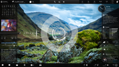
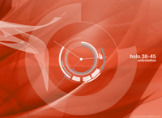
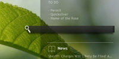
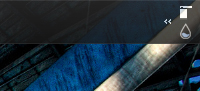

Enigma is one of the first fully-featured "suites" for the Windows system monitoring application, Rainmeter. Created in 2008, the suite has been through many evolutions, and remains popular to this day. It includes numerous contributions from members of the Rainmeter and broader Windows customizing communities.
|  | Version | Number | Status | Downloads |
| Current | 4 | Released. | Download Mirror 1 (Rainmeter.net) Mirror 2 (deviantArt) Mirror 3 (Customize.org) |
|
| Next | 5 | In development. |
Arcs is a futurustic clock and system monitor skin for Rainmeter, frequently used with Enigma. Along with Enigma, Arcs was one of Rainmeter's built-in skins in 2009. A legend is included in the skin package, as well as a variant with darker colors.
|  | Version | Number | Status | Downloads |
| Current | 1.2 | Released. | Download (Kaelri.com) Mirror 1 (deviantArt) |
A skin for Launchy, the cross-platform application, file and bookmark launcher. This skin will make Launchy blend in seamlessly with your Enigma-styled Rainmeter theme.
|  | Version | Number | Status | Downloads |
| Current | 1.1 | Released. | Download (Kaelri.com) Mirror 1 (deviantArt) |
Window transparency is a key element of Enigma's visual style. Visage is a tiny Windows tray utility which, while it's running, provides hotkeys to change the transparency of the active window, and of the Windows taskbar. You can also show or hide the taskbar. Visage is provided both as an executable and as an Autohotkey script.
|  | Version | Number | Status | Downloads |
| Current | 1.0 | Released. | Download (Kaelri.com) |
{kind=link}
{kind=link}
{kind=link}
{kind=link}